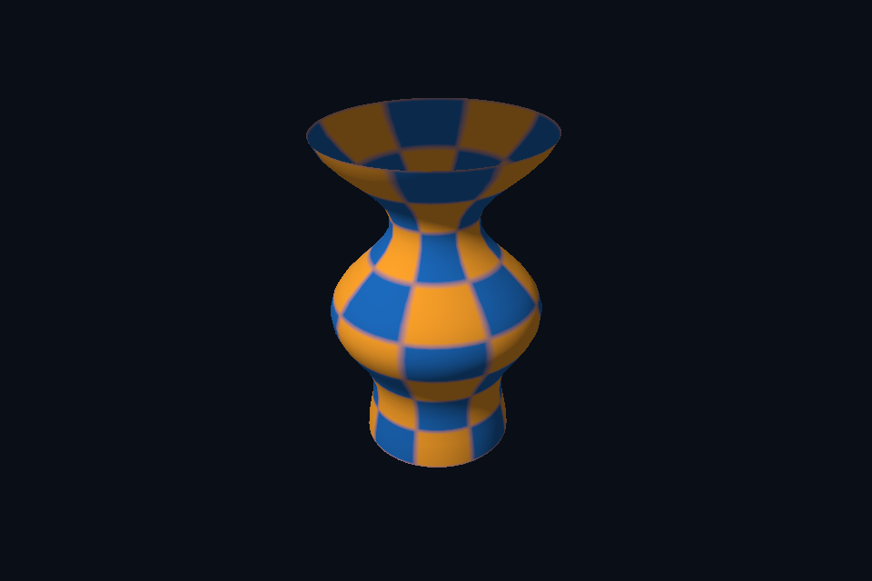

第 41 课 · OBJ 导入、索引与几何归一化 · DirectX 12
54 课目录 · 对照精讲 · 上一课 · 下一课
本课目标与先修
学习目标：解释“OBJ 导入、索引与几何归一化”解决的问题，找到实际对象和参数，运行对应实验并用数据/画面证明。先完成前一课，并能说明它交付的对象与完成条件；本课在该依赖上增加新契约。
为什么需要这一层
模型文件解析与 GPU 后端是两层。CPU 解析得到 mesh、indices、normal、UV，后端再上传和绘制。本实验使用课程自制 vase.obj，三角化后合并几何并核对顶点/索引数量。
DirectX 12 的对象、参数与执行推导
同一 Geometry 进入 DxScene 的 VBV/IBV 与 input layout。归一化 bbox 便于固定相机观察，但它改变资产单位，不能在工程中无记录地用于物理、灯光或动画尺度。
对照 Vulkan 原生：相同问题的另一种分工
staticAsset 将节点变换应用到顶点，以正确法线矩阵变换 normal，再把 Geometry 交给 SceneVk。原生缓冲、布局和索引路径可复用；模型不需要一套全新的绘图 API。
关键参数与可检查不变量
先为每项指出源码中的创建/绑定位置，以及证明它成立的实际日志、字节或图像。数值中的设备限制以查询为准；固定实验尺寸不当作所有设备的上限。
nvpro_core2 框架对照
资产解析、VMA 上传、descriptor 和 scene hierarchy 应分别设计。本轮框架路线保留六个基础例，提供接入点对照，不把原生 Assimp 导入算成已完成的 nvpro 模型播放器。
这部分是原生 Vulkan 各课的框架对照，框架可运行入口仍为原有六课。如果本节需要新接入工作，会按正文说明；不把原生实验当作已完成的框架实现。
运行与实际检查
从合集根目录执行；普通图形程序 Esc 退出，设备/计算/诊断程序输出结果后结束。从“开始学习.cmd”进入本页时，表格可直接点击运行。
cmake --preset dx12
cmake --build --preset dx12-debug --target dx21_obj_model --parallel 4
.\DirectX12\build\bin\Debug\dx21_obj_model.exe
ctest --preset dx12-debug -R "^dx21_obj_model$" --output-on-failure
检查三个层次：创建/绑定/提交的接口约束；数据读回或目标画面；资源使用结束后的回收。诊断实验用合法信息或查询证明渠道可用，不故意保留 API 错误。图形 smoke 的像素检查与数值实验的逐项检查不同，具体实现见源码。
关键实现：从当前源码定位
来自 shared/advanced.hpp，第 92—135 行。下列是当前仓库的局部切片，可能在函数中间结束；完整上下文请打开文件，切片不作为单独可编译程序。
inline Geometry staticAsset(const std::filesystem::path& path) {
Assimp::Importer importer;
const auto* scene =
importer.ReadFile(path.string(),
aiProcess_Triangulate | aiProcess_GenSmoothNormals |
aiProcess_JoinIdenticalVertices | aiProcess_ValidateDataStructure);
require(scene && scene->mRootNode, "Assimp could not load course model");
Geometry result;
unsigned nodes = 0;
std::function<void(const aiNode*, glm::mat4)> visit = [&](const aiNode* node,
glm::mat4 parent) {
++nodes;
glm::mat4 transform = parent * assimpMatrix(node->mTransformation);
glm::mat3 normalMatrix = glm::transpose(glm::inverse(glm::mat3(transform)));
for (unsigned m = 0; m < node->mNumMeshes; ++m) {
const auto* mesh = scene->mMeshes[node->mMeshes[m]];
uint32_t base = uint32_t(result.vertices.size());
for (unsigned i = 0; i < mesh->mNumVertices; ++i) {
const auto& p = mesh->mVertices[i];
auto n = mesh->HasNormals() ? mesh->mNormals[i] : aiVector3D(0, 1, 0);
auto uv = mesh->HasTextureCoords(0) ? mesh->mTextureCoords[0][i] : aiVector3D();
result.vertices.push_back({glm::vec3(transform * glm::vec4(p.x, p.y, p.z, 1)),
glm::normalize(normalMatrix * glm::vec3(n.x, n.y, n.z)),
{uv.x, uv.y}});
}
for (unsigned f = 0; f < mesh->mNumFaces; ++f) {
require(mesh->mFaces[f].mNumIndices == 3, "Non-triangle after triangulation");
for (unsigned k = 0; k < 3; ++k)
result.indices.push_back(base + mesh->mFaces[f].mIndices[k]);
}
}
for (unsigned i = 0; i < node->mNumChildren; ++i)
visit(node->mChildren[i], transform);
};
visit(scene->mRootNode, glm::mat4(1));
require(!result.vertices.empty() && !result.indices.empty(), "Empty imported model");
glm::vec3 lo(std::numeric_limits<float>::max()), hi(-std::numeric_limits<float>::max());
for (const auto& v : result.vertices) {
lo = glm::min(lo, v.position);
hi = glm::max(hi, v.position);
}
auto extent = hi - lo;
float scale = 2.f / std::max({extent.x, extent.y, extent.z, .0001f});
for (auto& v : result.vertices)
阅读时按“前置对象 → 参数/布局 → 录制/调用 → 完成/可见性 → 释放”五步标注。共享 helper 减少重复代码，但不会取消每课的 API 契约。
受控修改实验
只加载模型位置并用固定色画出，再分阶段恢复 normal/UV，说明这种顺序的作用。
先记录预测，再只改一个因素；保留基线与修改后的输出。不要同时改变 shader、资源范围和同步，这样即使结果变好也无法归因。
参考推导与通过标准
它把解析/索引/相机问题与材质问题分开。轮廓都不正确时，先不要调灯光或寻找缺失贴图。
常见失败与排查顺序
只取第一个 mesh、遗漏索引 base 或使用不匹配的 stride，会使模型残缺、错连或重叠。
先看第一条错误和当前执行路径，再看实际数据/绑定，最后看 shader 与画面。需要 GPU 证据时抓取正常交互帧；仅四帧的 smoke 适合自动检查，不适合手动抓帧。
自测与本课交付
能否不看源码回答：只加载模型位置并用固定色画出，再分阶段恢复 normal/UV，说明这种顺序的作用。
提交一份简短记录：输入与假设、唯一修改、预期、实际证据、原因、是否恢复基线。如果只能复述函数名而说不清何时允许访问/释放，先回到本课的数据流。
官方阅读位置与当前工程差异
指定 Vulkan 教程对应位置。DX12 路线按同一概念顺序建立映射，其对象与约束以 Microsoft 文档和本后端代码为准。49—54 课包含在基础/compute 之后加入的工程扩展。
版本与资料说明 · 调试 · 功能完成度
固定输入的实际 GPU 读回
